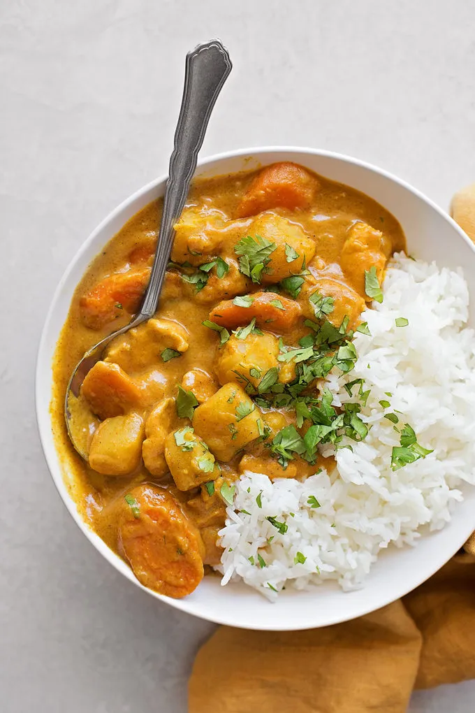

Chicken Curry

Why did I choose Chicken Curry as the Dish for this Exercise?
is what I had for dinner prior to doing this. a full meal, pack with protein,
flavor and is done in 1 pot!
Also something that I will like to mention in addition,
at the time I'm writing this paragraph was the second time I tried chicken curry.
the first time being yesterday at a fancy restaurant.
My wife was so amazed by the Indian flavors that she beg me to replicate the dish at home the day after.
Lets continue with the dish ingredients.
Ingredients
- 2 Cups Rice About
- Salt to taste for the chicken and rise
- 2 chicken thighs and 1 bone-in chicken breast
- 1 large yellow Onion
- 1 can of coconut milk
- 1 yellow curry paste
- 1 cup of Cilantro
- 1 bar of butter
- 2 spoonful's of lard (can use neutral oil as substitute
- 500 ml of chicken broth
Step by Step cooking
- Start cooking your white rice (don't forget to wash it)
- Season your chicken width salt without touching it
- cut your onion into small cubes without crying
- cut your chicken into 1 inch cubes or bite size pieces if you are not in MasterChef
- in a searing hot cast iron pot with the lard cock the outside of the chicken (don't fully cook it just let it get some color) then remove
- on the same cast iron put, cook the onion on medium low heat until golden brown
- add your coconut milk, curry, chicken broth and butter to the onions stir until boiling
- blend with a hand blender
- add your seared chicken and let it cook for 20 minutes
- plate your rice and chicken curry add cilantro as garnish